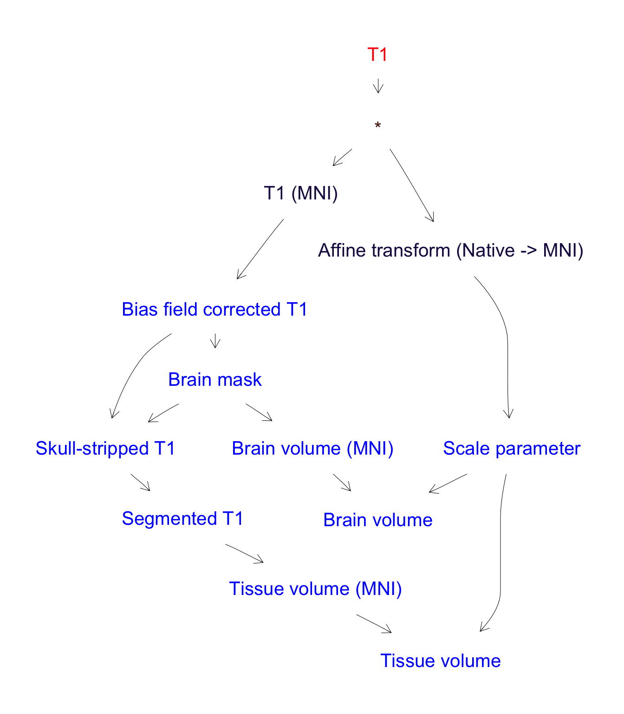

There are a lot of packages in the R ecosystem focused on several aspects of Neuroimage processing, many of them listed in the CRAN Task View: Medical Imaging section: oro.nifti, oro.dicom, RNifti, fmri, divest (among others) for reading/writing of images; ANTsR, fslr for more advanced processing methods; RNiftyReg specialized in registration, mritc focused in image segmentation. Many more, for DTI, fMRI, molecular imaging, and visualization are available in CRAN.
However, to get a complete Neuroimaging pipeline working, it is common to rely on several different packages, and, in general, no single package can offer all the functionalities desired. Tracking the requirements and dependencies of a pipeline is time-consuming, since the user has to manually find, for each function used, the packages it depends on.
In addition, the most typical form of building a pipeline in R is via scripting. Once the needed functions are defined or imported from a third-party package, one or more scripts are written in order to get all processes done.
But scripts are error-prone, difficult to trace and debug if the script is large, and require some level of customization when one tries to run the script in a different environment (computer, laboratory…). These cons make us think of defining self-contained workflows, easily shareable, which can perform the same operations as a script but with greater legibility and traceability.
The goal of this package is to provide certain features to manage the situations before:
-
Simple definition of Neuroimaging flows, which can incorporate any
Rfunction (including those from other packages, such asANTsRorfslr) as a part of it. At definition time, the package warns about inconsistencies on the flow from inputs to outputs (undefined functions or variables). - Creation of a common interface for the execution of Neuroimaging workflows, reducing the need of constantly looking up in the documentation of several packages. Instead of using a different syntax for each function, just execute the flow, specifying the required outputs, and all associated functions are run in the right order to get the results.
- Ability to automatically track dependencies. Every time a new function or process is inserted into a flow, the flow object tries to guess its dependencies, by looking up in the different loaded namespaces, and storing (internally) this information to be used in the export stage.
- Workflows can be shared across multiple systems. A flow object can be exported and saved as a regular .zip file, and then reloaded in a different computer. When importing a flow, the package detects (from in internals) if there are missing dependencies (packages not installed on the system) and prompts the user to install them.
-
Extensibility. A node in the workflow is a single function in
R, that is, something that can be computed in runtime. This means that a process in the pipeline can be, for example, a function to generate a plot, or to compute image statistics, or a function that wraps a random forest which has been previously trained to infer a labelling on the input image. Thetidyneuropackage provides the tools to extend this functionality to other computations: machine learning or deep learning models, for instance. - Simple memory management. The memory used by intermediate outputs when running a flow is automatically released when those outputs are no longer needed for further results, thus keeping the memory footprint as small as possible.
- Work natively with NIfTI files.
Installation
You can install the development version from the GitHub repo with:
# install.packages("remotes") remotes::install_github("neuroimaginador/tidyneuro")
The tidyneuro approach
In tidyneuro, a workflow is an ordered collection of processes that convert inputs into outputs, such that the output of a process may be the input to another one.
By defining the appropriate functions, one can model the pipeline in the correct order and obtain a flow as the one depicted in the following figure.
In this case, we have 3 inputs and several outputs. The arrows indicate which inputs are used to compute each of the other outputs.
Example
This is a basic example which shows you how to solve a common problem, the computation of tissue (gray matter, white matter and cephalospinal fluid) volume:

Code of Conduct
Please note that the tidyneuro project is released with a Contributor Code of Conduct. By contributing to this project, you agree to abide by its terms.